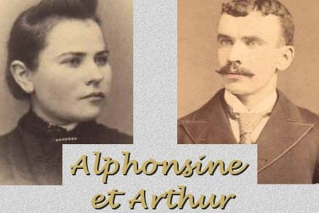
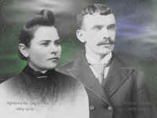
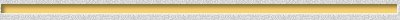
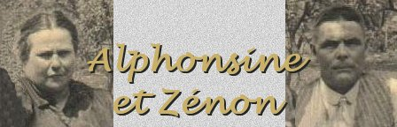
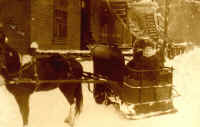
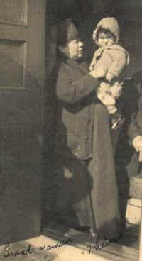
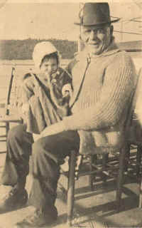
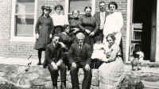
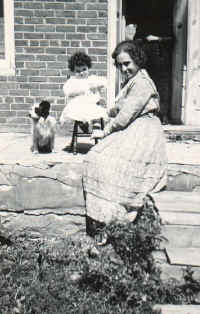
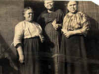

|
MARIE-ANNA'S MOTHER
|
|
 Alphonsine Gagnon is born in
St-Pacôme, near Kamouraska, on August 26, 1869. She is baptized the
same day in the parish of Rivière-Ouelle. Her godfather is Joseph
Gagnon and her godmother Léa Pelletier. Her birth record
states that her father is a day labourer. Alphonsine Gagnon is born in
St-Pacôme, near Kamouraska, on August 26, 1869. She is baptized the
same day in the parish of Rivière-Ouelle. Her godfather is Joseph
Gagnon and her godmother Léa Pelletier. Her birth record
states that her father is a day labourer.
She is the last of the
fourteen children of François Gagnon and Ombéline
Dionne.
Alphonsine is five when her mother Ombéline.
The family has lived in the
Bas du Fleuve
for several generations. But in the 1881 census we
find François Gagnon, a widower, in Chicoutimi. His trade is
day labourer, and he lives there with four of his daughters, including Alphonsine, aged
12.

|
|

We do not know when, or
why, Alphonsine settled
in Montréal. Several of her
brothers and sisters chose the
Chicoutimi area instead.
 On October 12, 1891, Alphonsine marries Arthur
Caron in the parish of St-Charles in Montréal.
Arthur was born on August 16,
1867, in St-Jean-Port-Joli. He was baptized there on the 18th; his godfather was
Frédéric Bertin, a sailor, and his godmother Marie Leclerc. His father, Joseph
Caron, a day labourer, and his mother, Geneviève Anctil, had married on November
6, 1866, in St-Jean-Port-Joli. They were both widowed, remarrying, and
already had children. Arthur's mother had married a
Cyrille Avoine in 1852. So Arthur had at least two known half-sisters, Louise
and Georgianna Avoine, buried in the Caron plot in
Notre-Dame-des-Neiges cemetery.
Alphonsine and Arthur have three
children: Jean, born on October 11, 1893, Marie-Anna, born on April 27,
1897, and Antonio, born on October 26, 1899. A fourth child, Arthur, born on February 22, 1901, is listed in
the 1901 census. He no doubt died very young, since we
had never heard of this child until now.
The Carons live in St-Henri.
From 1900 on, the Lovell* street directory lists an "Arthur
Caron, 54 Delinelle, St-Henri, tinsmith". So Arthur works as a
ferblantier (tinsmith).

 Arthur dies on October 31, 1904, at the age of 38. He is
buried in Notre-Dame-des-Neiges cemetery. A year later his
body is moved to plot K297 in the same cemetery. Clara Caron,
wife of John Alexander, buys this plot for the Caron
and Avoine families and their spouses. Clara, born on October 8, 1868, in
St-Jean-Port-Joli, is Arthur's little sister and the godmother of
Jean-Noël Charette. She dies in 1948, eight years after her husband. Arthur dies on October 31, 1904, at the age of 38. He is
buried in Notre-Dame-des-Neiges cemetery. A year later his
body is moved to plot K297 in the same cemetery. Clara Caron,
wife of John Alexander, buys this plot for the Caron
and Avoine families and their spouses. Clara, born on October 8, 1868, in
St-Jean-Port-Joli, is Arthur's little sister and the godmother of
Jean-Noël Charette. She dies in 1948, eight years after her husband.
The
photo opposite, assuming the man in the centre really is Arthur, must have been taken shortly before his death, since
Marie-Anna is about 8 in it.
We can recognize Alphonsine,
Arthur (?) and Marie-Anna. Marie-Anna seems very attached to another little girl, perhaps
a cousin. The other three children look alike.
The old lady glimpsed at the far right may be
Arthur's mother, Geneviève Anctil St-Jean, since Alphonsine's mother had
died long before. Geneviève dies on December 17, 1910.

|
|

As a widow, Alphonsine goes on living at
54 Delinelle, St-Henri, at the corner of rue Ste-Émélie. In
the Lovell* street directories from 1905 to 1913 we find
"Mrs Alphonsine Caron wid Arthur". It is from the
1911 census that we learn how Alphonsine made her
living. She gives her trade as
"laveuse pour des
particuliers" (laundress for private clients).
In other words, she washes other people's linen at home, starches it
if needed, and irons it. Her customers must have been
single men and better-off people from the neighbourhood or from Westmount, at
the top of the hill above St-Henri. Commercial laundries would only appear in
the following decade. In the same census we also learn
that Jean, the eldest son, 17, gives his trade as
"chartier" (carter).
He works 60 hours a week, 52 weeks a year, and
earned $350 the year before. Most of this money was
surely handed over to his mother, as was the custom of the time.
On September 13, 1913, in the parish of St-Zotique, Alphonsine marries
again, to Zénon Laframboise, recently
widowed. She had no doubt known him for some years, since Zénon,
his wife Célina Jasmin and his daughter Marguerite, born in February 1900,
had lived close by, at 455 rue Ste-Émélie, since at least
1908. In the 1911 census Zénon's trade is given as
carpenter.
Alphonsine and her children
move into Zénon's flat at 455 Ste-Émélie, and stay there
until 1922.
According to the Lovell* directory, the Zénon Laframboise family moves
to 457A Ste-Émélie from 1922 to 1924. Then the family moves back
to 455 Ste-Émélie.
In 1926 they move again, to 178 Allard, near the church of
St-Jean de Matha and the Dollard Desormeaux school, between rue
d'Aragon and rue Dumas. Throughout these years, Zénon's trade
in the directory is "mach", that is, machinist. Twice
an employer is mentioned: "Simmons Ltd".
So it is Zénon who takes on the
role of father to Jean, Marie-Anna and Antonio Caron. Only
Marie-Anna will go on to have children, and Zénon will become their
grandfather, the only one they will know. Gérard Charette remembered
"grand-père Laframboise" well. In winter he would take
the children for rides in a little sleigh pulled by a pony, to their
great delight.

Here we see Gérard (aged 3) in the foreground,
in the winter of 1925, in Montréal.
|
|
The family of Alphonsine Gagnon and Zénon Laframboise around
1917

Back row: Antonio Alphonsine Zénon Jean
Front row: Rosario Charette
(Marie-Anna's husband), Marie-Anna, Marguerite (Zénon's
daughter), Hélène (Nelly) Villemaire (Jean's wife).
|
|
Alphonsine and Zénon
often travel with Marie-Anna and Rosario. They seem to go
to the Saguenay every year, especially to Chicoutimi.
Alphonsine has several sisters and brothers there. Given the state of the
roads at the time, it is quite a long trip, part of
it by ferry.
Marguerite
Laframboise, Marie-Anna's good friend, marries on May 7, 1923, a
widower, Aldéric Pelletier. He has children, including a daughter,
Adrienne, who had herself married Henri Éthier on the previous November
18.
|
|

Alphonsine and Thérèse, 1919
|

Thérèse and Zénon, 1919
On the ferry on the Saguenay
|
|

Visiting relatives in Chicoutimi,
1919

Thérèse and Marie-Anna, 1919
|

Cars waiting for the ferry, around 1920

From left to right: Alphonsine, Thérèse, Benoît, Marie-Anna and Lydia
Bédard, a cousin of Marie-Anna's, 1921
|
|
In 1928 the
city changes the street numbering; 178 Allard
becomes 2725 Allard.
Alphonsine
dies onOctober 12, 1929. Zénon
Laframboise, machinist, goes on living in the flat at 2725 Allard
until 1937. That year he moves to 6879 Dumas, not far
from the corner of rue Allard.
Zénon dies in 1937 or 1938. In the Lovell* directory for
1938-1939 we find "Laframboise Mrs E wid Z et Belisle Miss
E 6879 Dumas".
For 1939-1940, we find "Laframboise
Mrs Ern wid Zénon 6879 Dumas".
Conclusion: Zénon did not like living alone. Widowed
by Alphonsine's death, he married a third time, to one
Ernestine Belisle, who lived with her daughter or her sister...
*
The Lovell directories run from July 1 of one year to June 30 of
the next. The information was gathered door to door in May. In
some directories, owners are marked with an asterisk.
The trade is often given, along with the employer. You can
search by a person's name or by address. They are
available on the website of the Archives
Nationales.
|
|


From left to right: Marie, Henriette,
Alphonsine.
The photo above
shows three of the fourteen
children of
François Gagnon and Ombéline Dionne.
Marie is the twelfth child.
Baptized on October
1, 1865, in St-Pacôme, she marries Salomon Bédard in 1886 and
dies in Montréal on September 12, 1928.
Henriette is the sixth child.
Baptized on January
6, 1857, in Trois-Pistoles, she marries Jean-Baptiste Daigneault and
dies in Montréal on March 12, 1942.
Alphonsine is the fourteenth child.
Baptized on
August 25, 1869, in St-Pacôme, she marries Arthur Caron, then Zénon
Laframboise. She dies in Montréal on October 12, 1929.
End
of the section on Alphonsine. |
|